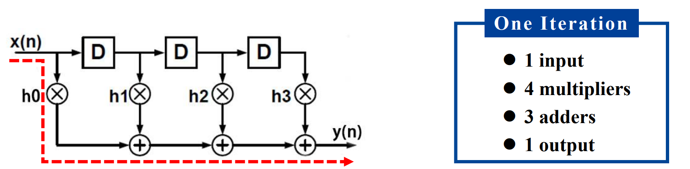
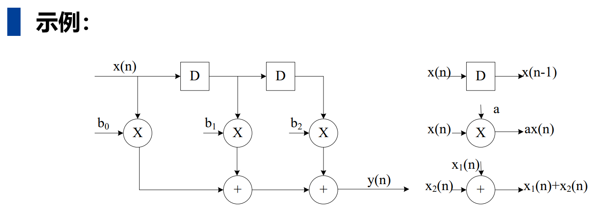
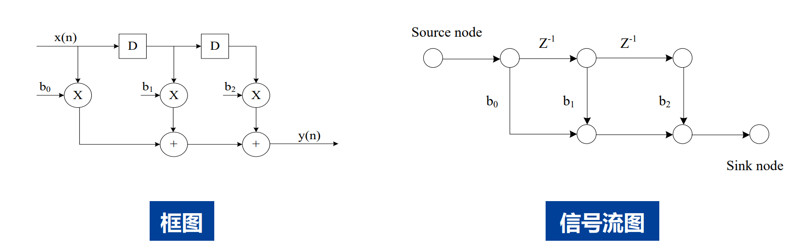
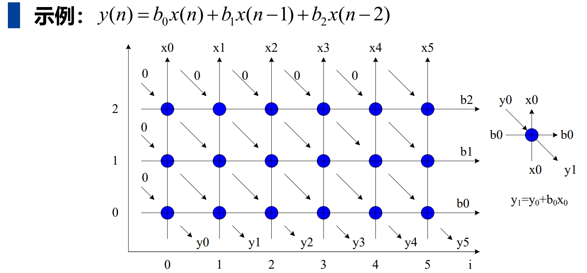

《VLSI数字通信原理与设计》 第三章：迭代边界 笔记
1. 本章主线
这一章要回答的核心问题是：带环路（反馈）的 DSP 系统，速度极限由什么决定？
- 对一个具体电路结构，时钟能打多快，先看关键路径（Critical Path）。
- 对一个带反馈环路的算法/系统，即使不断优化硬件，单次迭代也不可能无限快，它还受到迭代边界（Iteration Bound） 的限制。
可以先记住一句话：
关键路径限制“这版结构的时钟周期”；迭代边界限制“这个带环算法的迭代周期下限”。
2. 课件页码索引（便于对照）
| 主题 | 对应页码 | 重点抓什么 |
|---|---|---|
| 引言：为什么研究迭代边界 | p2 | 含环路系统的极限速度 |
| DSP 算法与 FIR 示例 | p4-p7 | 迭代、关键路径、结构变化 |
| 图形表示方法 | p8-p18 | 框图、SFG、DFG、DG |
| 基本概念 | p20-p24 | 路径、关键路径、环路、环路边界 |
| 迭代边界定义与性质 | p26-p28 | 关键环路、因果性、理论下限 |
| LPM 计算方法 | p29-p33 | 矩阵定义、递推、对角线取最大 |
| 三种周期关系 | p36-p37 | 采样周期、迭代周期、时钟周期 |
| 本章总结 | p38 | 会找关键路径，会算迭代边界 |
3. DSP 算法与“迭代”
3.1 DSP 算法的特点
课件用 FIR 滤波器举例：

DSP 算法通常是持续处理输入流的，不像普通程序那样“执行完就结束”。因此：
- 一次循环体执行 = 一次迭代（iteration）
- 完成一次迭代所需时间 = 迭代周期（iteration period）
3.2 一个直观理解
如果系统每次迭代处理一个输入样点并产生一个输出样点，那么：
- 迭代越快，系统吞吐率越高
- 但“快到什么程度”并不是只看运算器快不快
- 一旦系统里有反馈环路，就会出现结构性速度极限
4. DSP 算法的几种表示方法
4.1 框图（Block Diagram）
特点：
- 用功能块和有向边描述系统
- 有向边表示数据流方向
- 边上可以带有 0 个或多个延时单元
- 常用于从系统功能角度描述 DSP 结构
适合理解“系统做了什么”。

4.2 信号流图（SFG, Signal Flow Graph）
特点：
- 由节点和有向边组成
- 节点表示计算/任务
- 边通常表示常数增益或延时
- 有源节点（source node）和汇节点（sink node）
适合理解线性数字网络结构。

转置变换（Transposition）
对 单输入单输出（SISO）线性系统，可以做转置变换，且系统功能不变：
- 所有边方向反向
- 交换输入和输出
这个结论在 FIR 结构变换中非常重要。
4.3 数据流图（DFG, Data-Flow Graph）
这是本章最关键的图模型之一。
DFG 的特点：
- 只描述一次迭代过程
- 节点表示一次运算/任务执行
- 节点带有计算时间
- 有向边表示节点之间的通信关系
- 边上可带非负延迟（如 \(D\) 或 \(Z^{-1}\)）
DFG 中每条边都体现了优先顺序约束：
- 无延迟边：表示迭代内优先关系
- 有延迟边：表示迭代间优先关系
DFG 的粒度
- 细粒度：节点细到加法、乘法等基本运算
- 粗粒度：节点是滤波、FFT 等复杂功能块
Single-rate 与 Multi-rate
课件还区分了：
- Single-rate DFG：各节点速率一致
- Multi-rate DFG：不同节点工作速率不同
4.4 依赖图（DG, Dependence Graph）
特点：
- 强调算法计算间的依赖关系
- 在脉动阵列（systolic array） 分析里很常见

适合看“谁依赖谁”，尤其适合映射到规则阵列结构。
5. 基本概念：路径、关键路径、环路、环路边界
5.1 路径与关键路径
- 路径：数据在任意两节点间沿有向边和中间节点形成的通路
- 关键路径：所有无延迟路径中执行时间最长者
要点：
- 关键路径只看无延迟链
- 它直接决定最小时钟周期
5.2 迭代、迭代周期、时钟周期
- 迭代：DFG 中所有节点各执行一次
- 迭代周期 \(T_{it}\)：处理一个输入样点并输出一个结果所需的平均时间
- 时钟周期 \(T_{clock}\)：电路时钟的周期，由关键路径决定
注意区分：
- 时钟周期是硬件级节拍
- 迭代周期是算法级吞吐时间
- 它们有时相等，有时不相等
5.3 环路（Loop）
环路：起点和终点为同一节点的有向路径。
带反馈 DSP 系统的速度分析，核心就在环路上。
5.4 环路边界（Loop Bound）
对于第 \(L\) 个环路，定义：
其中：
- \(T_L\)：该环路上所有节点的总计算时间
- \(w_L\)：该环路上的延时数
为什么要“除以延时数”？
这是本章最容易“看懂公式、没懂含义”的地方，这里会触及到迭代边界的本质，请看如下例子：
更详细的解说可以参考 迭代边界-详细讲解
直观理解：
例子 A：没有反馈的系统（FIR 滤波器，开环）
算法：\(y[n] = x[n] + x[n-1]\)
（当前输出 = 当前输入 + 上一个输入）
- 算 \(y[1]\) 时：需要 \(x[1]\) 和 \(x[0]\) 相加。
- 算 \(y[2]\) 时：需要 \(x[2]\) 和 \(x[1]\) 相加。
思考：我能把系统加速到多快？
答案是：无限快（只要你有钱）！
因为 \(y[1]\) 和 \(y[2]\) 互不依赖。我可以买 100 个加法器并排放在那里，同时算 \(y[1]\) 到 \(y[100]\)。虽然每个输出从进去到出来都要经历 10ns，但我可以每一纳秒甚至每一皮秒吐出一个结果（这就是流水线和并行处理的威力）。
结论：没有反馈的系统，吞吐率没有理论上限，砸钱加硬件就能变快。
例子 B：有反馈的系统（IIR 滤波器，闭环）—— 这就是迭代边界存在的根源
算法：\(y[n] = y[n-1] + x[n]\)
（当前输出 = 上一个输出 + 当前输入）
- 算 \(y[1]\) 时：需要 \(y[0]\) + \(x[1]\)
- 算 \(y[2]\) 时：需要 \(y[1]\) + \(x[2]\)
- 算 \(y[3]\) 时：需要 \(y[2]\) + \(x[3]\)
思考：现在我还能无限加速吗？
绝对不行！ 因为你要算 \(y[2]\)，就必须等 \(y[1]\) 算完！而算 \(y[1]\) 雷打不动需要 10ns。
就算你是个土豪，买了 1 万个加法器，另外 9999 个加法器也只能干瞪眼等着。你无法跨越时间去预知 \(y[1]\) 的结果。
因此，这个系统平均出一个点的时间（迭代周期），永远不可能低于 10ns。
本质理解：
迭代边界，就是“时光不能倒流、因果不能打破”在硬件上的体现。
前向的数据（没有环路）可以无限流水线化、并行化；但反馈环路里存在严格的“辈分”依赖，长辈没生出来，晚辈就绝不可能出生。这个“等待长辈出生”的最短时间，就是性能上限（也就是迭代周期 \(T_{it}\) 的下限，即迭代边界 \(T_{\infty}\)）。
例子 C：跨步反馈系统
算法：\(y[n] = y[n-2] + x[n]\)
- 算 \(y[2]\) 时，需要 \(y[0]\) + \(x[2]\)
- 算 \(y[3]\) 时，需要 \(y[1]\) + \(x[3]\)
- 算 \(y[4]\) 时，需要 \(y[2]\) + \(x[4]\)
你看出来区别了吗？
\(y[2]\) 和 \(y[3]\) 之间没有依赖关系了！
\(y[2]\) 等的是 \(y[0]\)；\(y[3]\) 等的是 \(y[1]\)。偶数项自己玩，奇数项自己玩。
这时候，如果你买 2 个加法器：
* 加法器 A 专门负责算偶数项：\(y[0] \rightarrow y[2] \rightarrow y[4]...\) （每步耗时 10ns）
* 加法器 B 专门负责算奇数项：\(y[1] \rightarrow y[3] \rightarrow y[5]...\) （每步耗时 10ns）
这两个加法器可以完全同时工作！
虽然每个加法器依然是每 10ns 吐出一个结果，但因为有两个系统在并行，从外部看，系统每 10ns 可以吐出 2 个结果。
那么平均分摊下来，算出一个样点需要的时间就是：10ns / 2 = 5ns。
5.5 一个非常重要的结论
课件 p24 特别说明：
两个结构可以具有相同的环路边界，但关键路径不同。
这说明：
- 关键路径和环路边界不是一回事
- 缩短关键路径并不一定改变迭代边界
- 关键路径是“局部无延迟链”的限制
- 环路边界是“反馈环整体吞吐率”的限制
6. 迭代边界（Iteration Bound）
6.1 定义
迭代边界就是所有环路边界中的最大值：
其中：
- \(\mathcal{L}\) 是系统中所有环路的集合
- 取到最大值的那个环路叫做关键环路（critical loop）
6.2 物理意义
迭代边界给出了：
带反馈环路 DSP 算法，其迭代周期能够达到的理论下限。
也就是说：
不管你：
- 用更快的运算器
- 做更多并行
- 做更高效调度
只要算法本身的反馈依赖没有被本质改变，迭代周期都不可能低于这个下限。
6.3 迭代边界的特点
（1）环路必须含有延时元件
如果某个环路的延时数 \(w_L=0\)，那么：
这对应非因果系统，无法硬件实现。
因此：
- 可实现系统必须是因果系统
- 环路上必须有延时单元
（2）迭代边界是“所有实现方案”共同受限的下界
它不是某个结构偶然得到的值，而是：
- 带反馈算法性能的重要参数
- 描述“这个程序硬件实现后最快能有多快”的根本指标
（3）关键路径和迭代边界可能分别主导系统
- 若关键路径大，说明单拍太长，时钟打不上去
- 若迭代边界大，说明即使时钟很快，反馈迭代吞吐率仍受限
7. LPM：最长路径矩阵法（Longest Path Matrix）
这是课件给出的迭代边界系统计算方法。
7.1 基本定义
设系统中共有 \(d\) 个延时单元，记为 \(d_1,d_2,\dots,d_d\)。
构造一系列矩阵：
其中元素 \(l_{i,j}^{(m)}\) 的含义是：
从延时单元 \(d_i\) 到延时单元 \(d_j\) 的所有路径中，
恰好经过 \(m-1\) 个中间延时单元（不含起点和终点延时）时，
这些路径的最长计算时间。
若这样的路径不存在，则：
7.2 递推公式
课件给出的递推关系为：
其中 \(K\) 表示所有可能的中间延时节点索引集合。
理解方式:
- 先用一个“1 段路径” \(l_{i,k}^{(1)}\)
- 再接一个“m 段路径” \(l_{k,j}^{(m)}\)
- 看拼起来后谁最长
7.3 为什么只看对角线？
因为：
- \(l_{i,i}^{(m)}\) 表示从 \(d_i\) 出发又回到 \(d_i\) 的路径
- 这本质上就是一个环路
- 且这个环路中含有 \(m\) 个延时
所以：
就是一个环路边界。
于是：
7.4 LPM 计算步骤（人类计算）
第 1 步：给所有延时编号
把图中的所有延时单元标成 \(d_1,d_2,\dots,d_d\)。
第 2 步：写出 \(L^{(1)}\)
- 看从 \(d_i\) 到 \(d_j\) 是否存在中间不再穿过其他延时的路径
- 若存在，把该路径的最长计算时间填入
- 若不存在，填 \(-1\)
第 3 步：递推求 \(L^{(2)},L^{(3)},\dots\)
按递推公式逐级计算，直到 \(m=d\)。
第 4 步：收集所有对角线元素
把所有 \(l_{i,i}^{(m)}\) 找出来。
第 5 步：分别除以 \(m\)
每个对角线元素对应一个环路边界：
第 6 步：取最大值
最大者就是迭代边界：
7.5 LPM 计算时的注意点
- \(-1\) 表示“无路径”，不是 0。
- 只有对角线元素才直接对应环路。
- 不是所有矩阵元素都要拿来除以 \(m\)，只看 \(l_{i,i}^{(m)}\)。
- 关键环路不一定是“节点最多的环”，而是 \(T_L/w_L\) 最大的环。
- 做题时不要把“关键路径”和“迭代边界”混在一起。
8. 三种周期的关系：采样周期、迭代周期、时钟周期
8.1 采样周期
采样周期\(T_{s}\)：输入信号相邻样点之间的时间间隔。
它主要由应用决定，例如：
- 语音
- 图像
- 通信信号
不同场景的采样周期不同。
8.2 迭代周期
迭代周期\(T_{\text{it}}\)：完成一次算法迭代所需的平均时间。
它取决于：
- 时钟周期
- 每次迭代需要多少个时钟
- 每次迭代产生多少输出样点
8.3 时钟周期
时钟周期\(T_{\text{clock}}\)：硬件电路的工作节拍。
它由关键路径决定。
8.4 实时处理条件
实时处理要求：
即：
- 系统处理一个样点的速度
- 必须跟外部输入样点到达速度匹配
8.5 课件中的三种情况
流水线（Pipelining）
课件给出的典型情况：
含义：每拍稳定推出一个结果，节拍和吞吐一致。
并行处理（Parallel Processing）
- 时钟周期可以较慢
- 但通过并行硬件，整体迭代周期仍可满足采样周期
即：
- \(T_{clock}\neq T_{it}\)
- \(T_{clock}\neq T_s\)
折叠（Folding）
- 用较少硬件复用完成更多计算
- 因此需要更快时钟来支撑一个迭代
同样有：
- \(T_{clock}\neq T_{it}\)
- \(T_{clock}\neq T_s\)
9. 最容易混淆的几个点
9.1 关键路径 vs 迭代边界
| 项目 | 关键路径 | 迭代边界 |
|---|---|---|
| 看什么 | 无延迟路径 | 所有带延迟环路 |
| 反映什么 | 单拍时钟能多快 | 单次迭代最快能多快 |
| 主要决定 | 时钟周期下限 | 迭代周期下限 |
| 是否与具体结构强相关 | 很强 | 更偏算法/反馈本质 |
一句话区分：
- 关键路径：限制“单拍”
- 迭代边界：限制“反馈吞吐”
9.2 时钟周期 vs 迭代周期
- 一个迭代可能只需 1 个时钟，也可能要多个时钟
- 所以二者不总相等